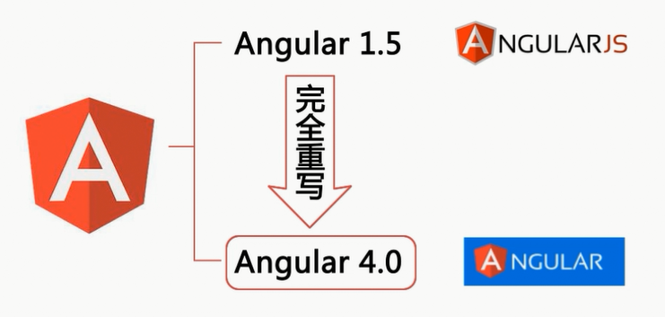
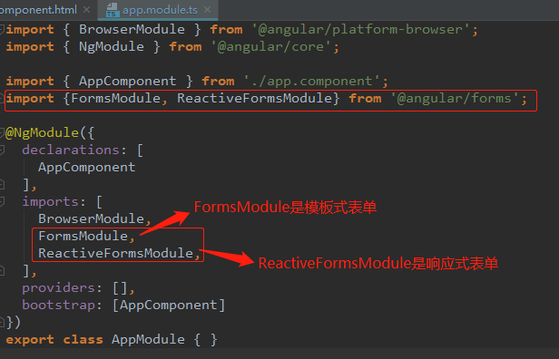
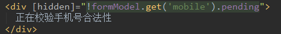

AngularJS统称是Angular1.X的版本，而Angular则是Angular2以后的版本，项目使用的是Angular4
-------------------------------项目知识点---------------------------------
1.路由和导航——路由基本知识、在路由时传递参数、路由高级特性（重定向路由、辅助路由、路由守卫）
2.依赖注入——Angular对依赖注入的实现方式、Angular的提供器和注入器
3.数据绑定、响应式编程（异步请求）、管道（过滤数据）
4.组件间通讯——输入输出属性、中间人模式、组件生命周期
5.表单处理——模板式表单、响应式表单、表单校验
6.与服务器通信——创建web服务器、使用Http协议与服务器通讯、使用WebSocket协议与服务器通讯
7.构建和部署、多环境支撑
-------------------AngularJS简介----------------------------------
1、AngularJS的优点
模板功能强大丰富
比较完善的前端MVC框架
引入了Java的一些概念
2、AngularJS的问题
性能、路由、作用域、表单检验、JavaScript语言、学习成本高
3、AngularJS架构

--------------------------------Angular简介--------------------------------------
1、Angular新特性
全新的命令行工具AngularCLI、服务器端渲染、移动和桌面兼容
2、Angular架构

组件：是Angular应用的基本构建块，你可以把一个组件理解为一段带有业务逻辑和数据的HTML
服务：用来封装可重用的业务逻辑
指令：允许你向HTML元素添加自定义行为
模块：用来将应用中不同的部分组织成一个Angular框架可以理解的单元
3、与React对比
React优点：速度、FLUX架构、服务器渲染
4、与Vue对比
Vue优点：简单、灵活、性能
--------------------------AngularCLI命令行工具-----------------------------
生成文件的用途

e2e：测试用途的文件夹
src：源文件
.editorconfig：webstorm的配置文件
.gitignore：gitig的配置文件
karma.conf.js：执行自动化测试的文件
packjson：模块的依赖包
tslint.json：这是tslint的配置文件
angular.json：angular的配置文件
src目录下：
app文件夹 —— 包括应用的组件和模块，所写的代码一般放在这里
assets文件夹 —— 存放静态文件
environment文件夹 —— 环境配置文件
index.html——整个文件的根HTML
main.ts—— 整个web应用的入口点
polyfills.ts —— 导入一些必要的库
style.css —— 全局的css
test.ts —— 关于自动化测试的
tsconfig.json —— TypeScript编译器的配置
app目录下：

app.component.css
app.component.html
app.component.ts —— 组件
app.component.
------------------------------------------------组件-------------------------------------------------

---------输入属性（@Inputs）：是用来接受外部数据的
---------提供器（providers）：是用来做依赖注入的
---------生命周期钩子：从组件在初始化到销毁的过程中，可以调用的各种生命周期钩子
---------输出属性（@Output）：定义一些外部组件可能会感兴趣的事件，可以输出给其他组件使用

@Component：装饰器，所有的组件都需要使用一个Component装饰器
用@Component装饰器定义了一个组件以及组件的元数据
selector：CSS选择器，表示这个组件可以通过app-root标签来调用
templateUrl ：指定了一个组件的模板文件
styleUrls：指定了一个组件的CSS样式表

AppComponent就是TypeScript的一个类，定义了组件的控制器
--------------------------------模块------------------------------------------

使用@NgModule声明了一个模块，用declarations声明了模块中有什么东西
注意：在declarations中只能声明组件、指令和管道
其实imports还声明了如果要正常运行，还需要什么东西
providers只能声明服务，默认是空的，定义了模块提供了什么服务
bootstrap声明了模块的主组件
-----------------------------angular应用的启动----------------------------------

在angular.json文件中，可以看出angular应用在启动的时候，页面渲染的是src目录下的index.html文件，运行的脚本是src目录下的main.ts文件
main.ts文件：

导入platformBrowserDynamic，会告诉angular要使用哪个模块来启动整个应用
导入enableProdMode，用来关闭angular的开发者模式
导入environment，即是导入了环境配置
导入AppModule，整个应用的主模块
下面的if判断，则是表示如果当前的环境是生产环境，这是用enableProdModule来关闭angular的开发者模式
最后则是是用platformBrowserDynamic的bootstrapModule的方法来传入AppModule作为启动模块来启动应用
angular应用启动，就是AppModule会去寻找主组件AppComponent，然后根据主组件AppComponent对应的CSS选择器app-root，然后在使用了app-root标签的地方，加载绑定模块文件app.component.html来替换app-root这个标签
--------------------------Angular引入第三方库---------------------------------------

-----------------------Angular项目声明数据--------------------------------------

-------------------------------一、使用Angular Route导航---------------------------------------
1、路由的基本知识
Angular使用的是单页面应用，就是页面渲染的一直都是index.html这个页面，路由的跳转，是URL的不同，不同的路由，渲染的页面依然还是index.html这个页面

(1).Router对象中有一组路由对象，每一个路由对象都是由path和component属性；
注意：path中不能用 “ / ”

(2).router-outlet
在AppComponent会自动生成router-outlet，router-outlet这个插座的作用就是让在页面中显示想要显示的组件

(3).router-link
在页面中声明导航路由的指令

router-link中的参数不是一个字符串，而是一个数组，这是为了在导航路由的时候可以传递一些参数
(4).Router
负责在运行时执行路由的对象，可以通过调用其navigate()和navigateByUrl()方法来导航到一个指定的路由

在HTML文件中绑定click事件，然后在对应的ts文件中定义事件

需要构造一个router，然后调用其navigate方法
(5).设置通配符路由

使用 ** 可以匹配任何字符，所以需要放在最后面，在输入不正确的路由导航时，显示Code404组件
>>>>>>>>>>>>>>>>>>>在路由时传递数据>>>>>>>>>>>>>>>>>>>>>>>>
(1).在查询参数中传递数据

在路由时通过问号，后面在参数和参数的值，来传递参数，而要获取参数，可以使用 ActivatedRoute.queryParams[id]这种方式来获取传递参数的值
--->第一步：在路由导航中添加参数以及参数的实际数据，实际参数的值为设置为[queryParams]="{id:1}"

--->第二步：在组件中，自定义一个参数poductId，用来存放传递参数的值，在构造函数中声明routeInfo为ActivatedRoute，这样就可以使用传递过来的参数了，使用this.routeInfo.snapshot.queryParams["id"]来获取传递的，名为id的参数，并将值赋值给自定义的参数ProductId

--->第三步：页面获取参数，在页面在可以直接使用自定义的ProductId，如果传递成功的话，ProductId是有值的

(2).在路由路径中传递数据

在路由定义路径是，定义需要携带的参数，并且在进行路由访问时，输入实际的参数值，而要获取参数，可以使用ActivatedRoute.queryParams[id]这种方式来获取传递参数的值
--->第一步：在配置路由的时候，定义要传递的参数

--->第二步：在执行routerLink指令的时候，传递参数的值，即id为1

--->第三步：在页面的ts文件中，自定义一个参数productId，用来存放传递参数的值，在构造函数中声明routeInfo为ActivatedRoute，这样就可以使用传递过来的参数了，使用this.routeInfo.snapshot.params["id"]来获取传递的，名为id的参数，并将值赋值给自定义的参数ProductId

--->第四步：页面获取ProductId

(3).在路由配置中传递数据

在路由配置中，定义路由的时候，在定义一个data属性，data里面放的是传递的参数，可以使用ActivatedRoute.data[0][isProd]这种方式来获取传递参数的值
(4).参数快照和参数订阅


如果在点击了a链接是跳转到productId为1的页面，此时再点击button添加到productId为2的页面，其实页面都是同一个，只是路由的URL不同，一个是1，而另外一个是2，在两者切换的过程，页面的productId只会显示第一次初始化Product组件的第一个值，而不会显示2的值，（可以理解我ngOnInit方法只初始化组件一次）要如何解决这样的问题的方法就叫做参数订阅
--->参数订阅

如果本身路由切换参数需要互相切换的话，要使用参数订阅，否则可以使用参数快照的方式
2、重定向路由：在用户访问一个特定的地址时，将其重定向到另一个指定的地址


当页面路由时空字符时，重定向到home组件上。重定向路由需要一个pathMatch属性，来告诉路由器如何用URL去匹配路由的路径，否则路由器就会报错
3、子路由
--->第一步：在原先的路由定义中，加入children即可以定义子路由

--->第二步：在父路由上增加router-outlet和子路由对应的组件的routerLink指令

在app.component.html中有一个router-outlet，在product-component.html中也有router-outlet，两个形成父子router-outlet
而且所有的路由都是在app.routing.module.ts这个模板中声明的
4、辅助路由

--->第一步：在app.routing.module.ts中声明辅助路由

--->第二步：在主插座以外还要声明一个带有name属性的副插座，同时在routerLink指令中，定义outlets， outlets中的属性，primary是指定当现实辅助路由aux时除了现实辅助路由，还要重定向到哪里

5、路由守卫（当用户满足某种条件时，才会被允许进入或者离开一个路由）：a.只有当用户已经登录并拥有某些权限时才能进入某些路由；b.一个由多个表单组件组成的向导，例如注册流程，用户只有在当前路由的组件中填写了满足要求的信息才可以导航到下一个路由；c.当用户未执行保存操作而试图离开当前导航时提醒用户
路由守卫（Angular提供的钩子）
a.CanActivate：处理导航到某路由的情况 （满足这个守卫的要求才可以导航到某个路由）
--->第一步：定义一个守卫，当满足条件时才给与跳转

--->第二步：在app.routing.module.ts中设置

b.CanDeactivate：处理从当前路由离开的情况（满足这个守卫的要求才可以从这个路由离开）
第一步：定义一个守卫，满足条件才给离开当前的路由

--->第二步：在app.routing.module.ts中设置

c.Resolve：在路由激活之前获取路由数据（在路由导航之前获取路由的数据，然后再渲染，而不是导航之后，在等待页面数据渲染，等待过程中数据绑定的值可能没反应过来，影响用户体验）
--->第一步：定义一个resolve的守卫
--->第二步：在app-routing.module.ts中引入


所有的组件都会封装在一个模块里，而Routes对象就是存在模块中，Routes对象有两个属性，一个是path，是组件的URL属性，一个是Component，指定了要显示的组件
a.首先页面在展示时，会展示AppComponent的模板，而如果需要在输入地址为 /user的时候在，AppComponent的模板显示组件A，那么就需要在模板中使用RouterOutLet指令，来指定输入/user地址，AppComponent模板中组件A显示的位置
b.如果想在模块中显示组件B，就可以在AppComponent中使用RouterLink指令
c.也可以使用控制器中Router对象的navigate方法，来改变浏览器的地址，从而实现路由的转换
d.而我们可以在URL的中传递参数，而传递的参数，就放在控制器的AppComponent的ActivatedRoute
---------------------------------------Angular属性绑定----------------------------------------------

意思是绑定star的值，star的值是true则，显示class类为glyphicon-star-empty，否则则显示默认样式

@Input是父属性将数据传递给子属性
--------------------------------------二、Angular依赖注入---------------------------------------------
学习内容：
-->什么是依赖注入模式及使用依赖注入的好处
-->介绍Angular的依赖注入实现：注入器和提供器
-->注入器的层级关系
----------------------------依赖注入模式要解决的问题---------------------------------
依赖注入：Dependency Injection简称DI
在依赖注入之前，要引用新的实例对象，需要不断地新建一个实例对象，之后再去引用，引用的过程可以看成是一个注入（把对象当成参数传递给方法，也可以说成是注入给这个方法）

控制反转：Inversion of Control 简称IOC（是指将代码的控制权从代码的内部转到代码的外部）
DI和IOC其实是两体一面的
Angular框架其实就是一个IOC容器，而Angular实现控制反转的手段就是DI（依赖注入）
---------------------------使用依赖注入模式的好处-----------------------------------------
1、好处：低耦合、增加可重用性

在Angular中，指定providers来告诉哪些对象需要依赖注入，providers里面是一个数组

这段代码的意思是：注册一个类型是ProductService的Token，当有组件或指令声明说需要一个叫做ProductService的Token，实例化一个ProductService，并将其注入到目标对象
如何声明自己需要一个Token?

在构造函数中声明一个自己需要的Token是什么，如上面的代码声明了需要一个名为ProductService（红色字体）对的Token，然后angular会去寻找对应的类是什么（即useClass是什么），然后实例化一个Token，注入到构造函数
2、好处：增加可测试性，可以不用等待其他组件的完成，可使用依赖注入，自行判断

--------------------------------------Angular的依赖注入实现----------------------------------------
学习内容
--->注入器：每一个组件都有一个注入器实例，负责注入组件需要的对象，一般情况下不需要直接调用注入器的方法，注入器会自动通过组件的构造函数，将组件所需的对象，注入到组件

--->提供器
 等同于
等同于
先找productService，然后new一个useClass中的ProductService，然后再转入构造函数

先找productService，然后new一个useClass中的AnotherProductService，然后再转入构造函数

也可以直接返回一个方法
--->实例：
--->第一步：声明一个服务

--->第二步：修改模板中的注射器

--->第三步：在组件的ts文件中注入

--->第四步：在页面中获取数据

--->总结：
--->第一步：定义一个提供器

--->第二步：在组件中声明提供器，并注入到组件中

--->第三步：获取数据

--->第四步：在app.component.html中引入组件

1.当提供器声明在一个模板中，所有的组件都是可以使用的
2.当一个提供器声明在一个组件中，它只对声明它的组件和它的子组件可见
3.当声明在组件的提供器和声明在模块中的提供器具有相同的Token是，组件中的提供器会覆盖掉模块中的提供器
4.一般情况下，要将提供器声明在模块中，只有提供器是在组件中声明并且对于其他组件不可见时，才声明在组件中
一个服务能不能注入到其他地方，是要看是否在app.module.ts的providers中声明来决定的

--->@Injectable()装饰器
注意：
1、只有声明了的服务才可以注入到别的服务里面；


2、组件为什么可以不用@Injectable()，就可以注入服务？回答：因为组件中有@Component装饰器（以及管道装饰器）都是@Injectable()装饰器
----------------------------------使用工厂方法和值对象来声明提供器-------------------------------
在某些时候，我们的实例对象，需要根据某些条件下来决定要实例化哪些对象，或者调用构造对象时要传递参数，这时候请使用工厂提供器

在app.module.ts中声明工厂提供器，工厂方法创建的对象，是一个单例对象，工厂方法只会在第一个注入的方法时被调用一次，然后再所有被注入的组件中，都是同一个对象

问题1：解决工厂提供器依赖其他服务的耦合问题
在工厂方法中，使用deps参数（用来声明工厂方法依赖的参数，而实现低耦合），angular会声明一个deps中的实例（也就是LoggerService），然后注入到useFactory中
问题2：解决工厂提供请依赖其他变量的问题
a.使用单一值来解决

b.使用一个对象来解决

-------------------------------------注入器的层级关系------------------------------------------


以组件Product2为例，在Product2组件的构造函数中，注入了一个ProductService，首先会在自身找有没有该提供器，没有则去主组件app.module.ts中找，如果app.module.ts中也没有则去应用级注入去中去找，如果还是没有，则会报错
--------------------------------三、数据绑定，响应式编程和管道-----------------------------------------
学习内容
-->数据绑定
-->响应式编程
-->管道
-------------------------------------------数据绑定--------------------------------------------------

使用插值表达式的值显示在模板上

使用方括号将HTML标签的一个属性绑定到一个表达式上

使用小括号将组件控制器的一个方法绑定为模板上一个事件的处理器
---->事件绑定

注意：
1、右侧的表达式可以是一个函数调用，亦可以是一个表达式

2、右侧的函数调用可以是一个DOM事件，也可以是一个自定义的函数
插值表达式和属性绑定其实是一个东西，要保证开发的一致性
例如在img标签中，属性绑定src和用插值表达式绑定src是一样效果的，在Angular中会自动把插值表达式绑定的src翻译成属性绑定

---->常见的事件绑定
1.DOM属性


2.HTML属性

DOM属性是变化的，而HTML属性是不变的。
----->HTML属性和DOM属性的关系
1、少量HTML属性和DOM属性之间有着1 ：1的映射，如id；
2、有些HTML属性没有对应的DOM属性，如colspan；
3、有些DOM属性没有对应的HTML属性，如textContent；
4、就算名字相同，HTML属性和DOM属性也不是同一样东西；
5、HTML属性的值指定了初始值；DOM属性的值表示当前值。DOM属性的值可以改变；HTML属性的值不能改变。
6、模板绑定是通过DOM属性和事件来工作的，而不是HTML属性
---->AngularDOM属性绑定（Angular是通过DOM属性来绑定的，我们优先要使用DOM属性绑定数据，但是如果没有DOM属性可以绑定，那就是用HTML属性绑定）


在组件中定义的属性绑定，改变的是DOM属性，而不是HTML属性
注意：当使用不了DOM属性绑定时，只能使用HTML属性绑定

td没有DOM属性可以绑定

此时只能使用HTML属性绑定


---->HTML属性绑定
基本HTML属性绑定

CSS类绑定

样式绑定

双向数据绑定

使用[(ngModel)]来进行数据双向绑定，可以理解为盒子里的香蕉
注意：如果ngModel不起作用，要确认app.module.ts中，是否引入了表单模块

---------------------------------响应式编程---------------------------------------------
在响应式编程中，万物皆是流

--->可观察对象Observable（流）：表示一组值或者事件的集合
--->观察者Observer：一个回调函数集合，它知道怎么去监听被Observable发送的值
--->订阅Subscription：表示一个可观察对象，主要用于取消注册（subscription.unsubscribe()这个方法，取消关注）
--->操作符Operators：纯粹的函数，使开发者可以以函数编程的方式处理集合
A被赋值为B和C的值。这时，如果我们改变B的值，A的值并不会随之改变。而如果我们运用一种机制，当B或C的值发生变化的时候，A的值也随之改变，这样就实现了“响应式”
下面三个重要的概念是响应式流API的构建基础：
--->发布者是事件的发送方，可以向它订阅
--->订阅者是事件订阅方
--->订阅将发布者和订阅者联系起来，使订阅者可以向发布者发送信号
响应式编程就是：异步数据流编程

这是一个最简单的响应式编程的例子
使用模板本地变量可以获取input的值


--->案例：现在有个搜索框，在输入东西后就开始进行搜索。我想搜索IBM，当我输入I的时候就会触发keyUp事件去服务器搜索，当我输入IB的时候也会去服务器搜索，这不是我们想要的。我们想输入完IBM后去搜索。这里可以设置一个时间间隔，在这个时间间隔内没有再输入东西的时候就去服务器搜索。这个功能用传统的JavaScript实现起来比较麻烦
----->第一步：修改app.module.ts

----->第二步：新建Bind组件，并修改其ts文件


当搜索框中的值改变时，就会在控制台打印出来
但是如果这样来输入字符后，就不会马上打印，而是会在500毫秒内没有再输入新东西时才会去打印

注意：如果有报错import ‘rxjs/Rx’，可以使用

---------------------------------------管道-----------------------------------------------
在Angular中，管道用来处理这种原始值到显示值的转化（也就是把值转化成简化或者angular其他一些内置管道的格式）

date：用来转化时间的，可以传入参数，使时间按照参数的样式显示
number：用来转化数字的，2.1-4的理解为，保留两位整数，小数最少保留1位，最多保留4位，保留的过程中有四舍五入
async：是用来处理异步流的
---->自定义管道

生成一个管道，管道名字为multiple，是在pipe目录下
注意：管道和组件一样也是要在app.module.ts中声明的，如果没有，要自己在app.module.ts中的declarations中加入


Pipe装饰器，使用自定义管道时，要使用Pipe装饰器中的name，transform方法规定了原始值和参数格式，return就是返回转化后的值，value是原始值，args是参数格式
---------------------------------------四、组件间通讯---------------------------------------------------
学习内容：
--->组件的输入输出属性（父子组件之间传值）
--->使用中间人模式传递数据（在没有父子关系的组件之间传值）
--->组件生命周期以及angular的变化发现机制
-----------------------------------@Input输入属性------------------------------------------
@Input输入属性，用来接收父组件传递的数据
--->第一步：在子组件中声明@Input输入属性，以及传递进来的参数

--->第二步：在子组件中体现

--->第三步：在父组件中声明并传递参数给子组件


以上就是父组件向子组件传递数据，还有就是通过路由传递数据
方法一：@Input()输入属性通过属性传递数据（只能在有父子关系的组件中，由父组件传递给子组件）；
方法二：路由参数输入属性，构造函数
----------------------------------@Output输出属性------------------------------------------
@Output()子组件向父组件传递数据
--->EventEmitter<泛型>输出属性
--->捕捉EventEmitter和捕捉原生DOM的事件是一样的，事件绑定
--->双向数据绑定，输出属性的名字 = 输入属性的名字 + change
子组件输出属性

使用@Output()属性，输出lastPrice1事件，然后lastPrice1事件将PriceQuote的定义发射出去
父组件定义属性，并绑定发射的lastPrice1事件，定义priceQuoteHandler（$event）,在绑定的priceQuoteHandler方法中，返回event，event参数中返回priceQuote


-----------------------------------------中间人模式---------------------------------------------------

组件1是组件2、6、3的中间人，组件2是组件4、5的中间人，组件3是组件7 、8的中间人
--->第一步：报价组件输出属性
报价组件绑定点击事件，点击事件将buy1的事件发送出去，携带这PriceQuote数据

--->第二步：报价组件修改

--->第三步：中间人模式绑定事件
主组件绑定发射出来的buy1事件，定义了buyHandler事件，返回的event参数就是PriceQuote

--->第四步：中间人模式获取事件属性

--->第五步：下单组件修改
同时下单组件绑定priceQuote属性，属性绑定为buyHandler的返回值priceQuote


--->第六步：下单组件引入数据

如果两个组件之间没有共同的父组件（或者中间人），就应该使用依赖注入
-------------------------------组件的生命周期----------------------------------------------

红色的方法只会调用一次，而绿色的方法会被多次调用，组件的生命周期分成三个阶段，组件初始化、变化检测、组件销毁阶段，而变化检测阶段的四个方法（ngOnChanges、ngDoCheck、ngAfterContentChecked、ngAfterViewChecked）和初始化中的四个绿色同名方法是一样的，其实一共就九个方法
--->在组件中的生命周期


生命周期钩子函数在组件中的调用顺序如上图所示
------------------------------------ngOnChanges钩子函数----------------------------------------
----->ngOnChanges钩子函数（父组件初始化或修改子组件的输入参数时会被调用），如果没有输入属性，ngOnChanges永远不会被调用，ngOnChanges首次调用一定是发生在ngOnInit之前
------->可变对象：在JavaScript中，对象是可变的

对象user的name属性指向值为Jerry的字符串，当第二行的代码被执行时，user.name的地址指向新的内存，就是值为honny的字符串的地址，user本身还是保持被创建时的内存地址，换句话说，只是改变对象user地址的内容，而不是它指向的地址
------->不可变对象：在JavaScript中，字符串是不可变的，意味着字符串在内存中被创建时，他的值永远不会被改变

例子：在内存中创建了一个名为"Hello"的字符串，第二行代码并不改变第一个字符串，而是在内存中，新建一个名为"Hello world"的字符串，对于greeting这个变量来说，它的值是变了，它指向的内存地址改变了 
案例：使用父组件的数据绑定子组件的输入属性，来观察OnChanges钩子函数
--->第一步：在子组件中定义数据类型并输出，同时绑定ngOnChanges事件

--->第二步：在子组件中体现

--->第三步：在父组件中定义数据并绑定子组件的输出属性


--->第四步，当父组件双向绑定的数据，改变了子组件的数据，可以看出改变字符串会调用OnChanges函数，而改变对象则不会

-------------------------------------变更检测和DoCheck钩子--------------------------------------
Angular的变更检测是根据zone.js来实现的，变更检测是保证组件的属性变化和页面的变化时同步的，
变更检测只是将改变反应到页面上，而永远不会改变属性的值
------->变更检测

默认都是采用Default策略，只要父组件改变了，就会进行检测，除非子组件声明了变更策略是OnPush，否则就会一直检测

该图孙子组件1发生改变，除了子组件2（声明了OnPush策略）不用检测，其他都需要检测
注意：当使用带有Check关键字的钩子时，要写非常高效非常轻量级的代码，不然会影响性能

只是在页面上点击，就会触发事件，而真正改变的东西只有user.name改变的时候，所以要写非常高效非常轻量级的代码，不然带有check关键字的钩子会被多次调用而影响性能
--------------------------------------View钩子------------------------------------------------
--->第一步：在子组件中定义方法

--->第二步：在父组件中声明ViewChild属性

--->第三步：向子组件传参数

注意：1.ngAfterViewInit钩子在ngAfterViewChecked钩子之前；2.这两个方法都是在视图被组装完毕以后来调用的；3.如果组件有子组件，要当所有的子组件的视图被组装完毕后，父组件的ngAfterViewInit钩子和ngAfterViewChecked钩子才会被调用；4.不要在两个方法里面改变视图中绑定的数据，如果要改变，也要写在setTimeOut里面，否则会抛出异常（因为这两个钩子时在页面组装完毕后调用的）

------------------------------------------ngContent指令----------------------------------------------
ng-content用来标记一个投影点，用来将父组件的某一个片段投影到子组件

父组件绑定的HTML代码会投影到子组件对应的ng-content的位置

不过使用innerHTML 属性绑定，也可以渲染HTML代码，但是只能绑定自身组件，会有所限制，优先考虑ng-content


--------------------------------ngAfterContentInit和ngAfteContentChecked-----------------------
同时在父子组件中都定义ngAfterContentInit和ngAfteContentChecked ，结果是这样的

-----------------------------------ngOnDestroy-------------------------------------------------------
在路由切换的时候会执行ngOnDestroy这个钩子，前一个路由的钩子会被销毁，而后一个钩子会被创建
--------------------------------------------小结-------------------------------------------------------
-->父子组件之间应该避免直接访问彼此的内部，而应该通过输入输出属性来通讯
-->组件可以通过输出属性发射自定义事件，这些事件可以携带任何你想要携带的数据
-->在没有父子关系的组件之间，尽量使用中间人模式进行通讯
-->父组件可以在运行时投影一个或多个模板片段到子组件中
-->每个Angular组件都提供了一组生命周期钩子，供你在某些特定的时间发生时执行相应的逻辑
-->angular的变更检测机制会监控组件属性的变化并自动更新视图。这个检测非常频繁并且默认是针对整个组件树的，所以实现相关钩子时要慎重
-->你可以标记你的组件树中的一个分支，使其被排除在变更检测机制之外
---------------------------------------------5.表单处理---------------------------------------------------
学习内容
--->模板式表单
--->响应式表单
--->表单验证
-----------------------------------------Angular表单API---------------------------------------------
纯HTML表单：显示表单项、校验用户输入、提交表单数据
--->模板式表单：表单的数据模型是通过组件模板中的相关指令来定义的，因为使用这种方式定义表单的数据模型时，我们会受限于HTML的语法，所以，模板驱动方式只适合用于一些简单的场景
--->响应式表单：使用响应式表单时，你通过编写TypeScript代码而不是HTML代码来创建一个底层的数据模型，在这个模型定义好以后，你使用一些特定的指令，将模板上的HTML元素与底层的数据模型连接在一起
不同的地方：1.不管是哪种表单，都有一个对应的数据模型来存储表单的数据。在模板式表单中，数据模型是由angular基于你组件模块中的指令隐式创建的。而在响应式表单中，你通过编码明确的创建数据模型然后将模板上的html元素与底层的数据模型连接在一起；2.数据模型并不是一个任意的对象，它是一个由angular/form模块中的一些特定的类，如FormControl、FormGroup、FormArray等组成的。 在模板式表单中，你是不能直接访问到这些类的；3.响应式表单并不会替你生成HTML，模块仍然需要你自己来编写；4.区分模板式表单和响应式表单，如果都是什么ngModel、ngSubmit这些带ng的指令，就是模板式表单，如果是前缀是formGroup、FormControl什么的，就是响应式表单
不管要使用哪种表单，都要在app.module.ts中引入

----------------------------------模板式表单-------------------------------------------------------
-->NgForm:自动添加到每个form标签，接管Form指令
>>>>>隐式创建一个FormGroup类的实例，FormGroup类用来存储数据模型和表单模型
>>>>>自动发现NgModel的所有子元素，并自动将其添加到表单数据模型中
>>>>>也可以绑定到其他标签上
>>>>>如果想使用原生Form，可以在标签添加ngNoForm属性
>>>>>NgForm可以被模板本地变量引用，以便在模板中访问NgForm对象的实例
>>>>>使用ngSubmit代替submit按钮，阻止跳转
-->NgModel：双向数据绑定，标记一个html元素成为表单的一部分；隐式创建一个FormControl类的实例，利用FormControl来存储数据的值
-->NgModelGroup
>>>>>代表表单的一部分，允许将表单字段组织在一起，形成更清晰的层次关系
>>>>>隐式创建FormGroup的实例


---------------------------------------------响应式表单------------------------------------------------
响应式表单ReactiveFormsModule（可适配多个渲染器）：可以直接访问数据模型相关的类，但是由于不可引用，只能在代码汇总操作数据模型，不能再模板中操作
--->第一步：创建数据模型，用来保存表单数据的数据结构
---->FormGroup
--->一般用来代表整个表单，或者表单字段固定的子集
--->如果其中一个FromControl是无效的，整个FormGroup就是无效的
---->FormControl
---->FormArray
--->一般用来代表可以增长的字段集合
--->类似FromGroup，但是有一个长度属性
--->没有key，只能通过序号访问相关的元素
------------------------------------------响应式表单指令--------------------------------------------

第二列的需要属性绑定语法；而第三列只需要指定一个属性名即可，只能用在FormGroup指令覆盖的范围之内

带有Name的都要在FormGroup中

-----------------------------------响应式表单重构-------------------------------------
模板式表单


响应式表单


使用FormBuilder进行响应式表单的重构

--------------------------------------------------表单检验---------------------------------------------

对象是FormGroup的话，不能和FormControl一样直接写入校验方法，而是要声明在 validators里面
在页面提示校验信息，可以这样写

使用异步的订阅流来模拟发出请求

formModel.status的值一开始会呈现INVALID，在手机号码输入正常后会显示PENDING，等待五秒后，会返回VALID

要注意引入Observable以及of、delay方法

--------------------------------------状态字段-------------------------------------------------
--->touched和untouched：是否获取焦点（把用户名的两个校验用一个div包含起来，鼠标失去焦点后显示）

--->pristine和dirty： 如果字段的值改变过，则pristine为false，dirty为true（把手机号的校验用div包起来，鼠标失去焦点不显示，只有在输入字符后才会检验提示）

--->pending：当一个字段处于异步校验时，属性为true，这个时候可以显示一段文字或图片，来告诉用户正在校验（在手机号码验证下面添加一个div，用于pending示例）

------------------------------------------模板式表单校验---------------------------------------------
使用指令来进行模板式表单的校验，要先声明一个指令

指令和组件很类似，可以理解为没有HTML模板的组件


---------------------------------------------6.与服务器通讯----------------------------------------------
学习内容：
--->创建Web服务器
--->HTTP通讯
--->WebSocket通讯
>>>>>>>>>>>>>>>>>>>>>>>>>创建Web服务器>>>>>>>>>>>>>>>>>>>>>>>>>>
学习内容：
--->使用NodeJS创建服务
--->使用Express创建restful的http服务
--->监控服务器文件的变化
----------------------------------------使用NodeJS创建服务------------------------------------------
1.先定义一个文件夹server，然后使用npm init -y 引入带有默认配置的package.json文件

2.使用npm i @types/node -save命令，引入node的第三方包

3.自定义文件tsconfig.json文件

compilerOptions是编译器的配置
target：目标是把代码编译成es5的JavaScript脚本
module：module用的规范是commonjs
emitDecoratorMetadata：跟装饰器相关
experimentalDecorators：跟装饰器相关
outDir：生成的文件要放在一个叫做build的目录里
lib：开发的时候用es6语法
exclude：排除了“node_modules”文件夹不编译
4.要在TypeScript中设置文件

5.在文件夹中创建server空文件夹，并创建hello_server.ts文件

6.使用node build/hello_server.js命令，运行服务，即可在浏览器中运行localhost：8000

---------------------------------------使用Express创建restful的http服务------------------------------
1.使用npm install express --save安装express 框架

2.安装express的类型定义文件

3.在server文件夹中创建aution_server.ts文件

4.启动服务

5.安装nodemon，在服务改变时会自动重启服务，不需要手动去重启服务（监控服务器文件的变化）

6.安装好后，用nodemon bulid/aution_server.js来启动服务，nodemon可以实现页面热更新

>>>>>>>>>>>>>>>>>>>>>>>>>>>Http通讯>>>>>>>>>>>>>>>>>>>>>>>>>>
学习内容：
--->了解angular的Http服务
--->发送http请求
--->处理http响应
------------------------------------------------Http服务---------------------------------------------
1.使用一个Http服务：是订阅了get请求才会发出请求，get方法只是定义了一种服务

2.同时要在app.module.ts中声明HTTPClientModule

注意：在angular2是使用HTTPModule，而Angular4以上是使用HTTPClientModule来使用http服务的
3.要在根目录创建proxy.conf.json

4.在根目录的package.json文件下修改start命令

5.同时修改请求的路径


在angular中，也可以使用一个异步的async管道来请求数据


>>>>>>>>>>>>>>>>>>>>>>>>>WebSocket通讯>>>>>>>>>>>>>>>>>>>>>>>>>>
学习内容：
--->了解WebSocket协议
--->创建WebSocket服务器
--->使用WebSocket协议通讯
-----------------------------------------了解WebSocket协议------------------------------------------


区别：1.在进行HTTP协议时，服务器连接，数据传输方向只能有一种（即http请求或者http响应），不能同时发送数据和请求数据；2.在进行WebSocket协议，服务器连接，可以同时发送数据和请求数据；3.WebSocket是一个常连接协议，不需要在每次发送数据时，建立连接，通讯的延迟要比Http协议要低；
4.由于WebSocket协议常连接的存在，不要每次请求时都携带连接相关的信息，请求的数据要比Http协议的要少
-----------------------------------------了解WebSocket协议------------------------------------------
安装ws协议的命令

安装对应的类型对应文件


1.服务器端：

意思是在端口8085上面创建一个新的Server，在有任何一个客户端连接这个服务器的时候，给这个客户端推送一个信息，websocket.on方法是接受客户端提交的消息，http是通过订阅http服务的get或post方法返回的流来处理服务器的响应数据，但是Angular并没有提供一个类似http服务端的类来从WebSocket中产生一个流，所以要自己写一个服务来返回流
2.client客户端姓名中新生成一个服务 ng g service shared/websocket
修改web-socket.service.ts

3.新建一个组件ng g component webSocket

4.修改web-socket.component.html

5.要修改app.module.ts

之后启动服务器端以及客户端项目，之后访问 http://localhost:4200/，查看浏览器的控制台可以看到“这个消息是服务器主动推送”，然后点击按钮，查看server项目的控制台会看到“ 接收到消息：Hello from client”
6.修改服务器端的aution_service.ts

遍历每个客户端，每2秒给每个客户端推送消息


---------------------------------------------7.构建和部署----------------------------------------------
学习内容：
--->构建：编译和合并——在项目中执行 ng build
--->部署：与服务器整合
执行完构建项目ng build命令后，会在项目中生成dist文件夹，将文件夹中的文件拷贝到服务端项目的新建client文件夹中

在aution_server.ts文件中修改


当访问根目录的时候，希望express这个框架去找静态的文件，路径是在当前文件夹的上级client文件夹中
添加新的步数策略，如图可以解决构建后无法跳转路由的问题，url出现一个#号

--->多环境：一套代码支持多环境

---------------------------------------------8.总结----------------------------------------------
开发流程：设计！设计！设计！
1.使用Angular-CLI工具创建一个新的项目
2.按照你们之前设计的组件关系开始从下往上编写组件
3.按照父子关系组装组件并配置路由
4.在开发环境上测试应用
5.构建应用并部署到测试/生产环境
后续学习：
高级特性：动画、指令、安全等
周边生态：angular CLI，angular material，angular universal，第三方的组件，UI库，框架等ionic，native script